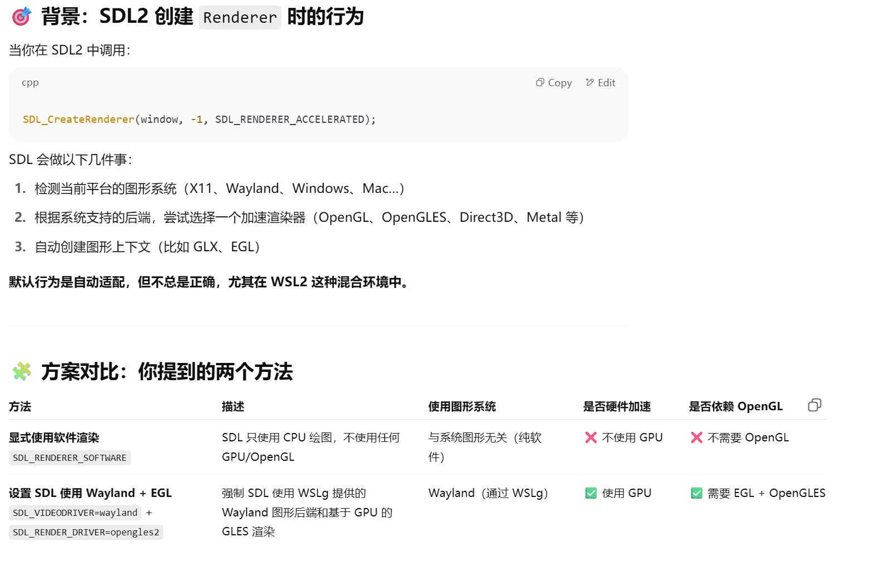
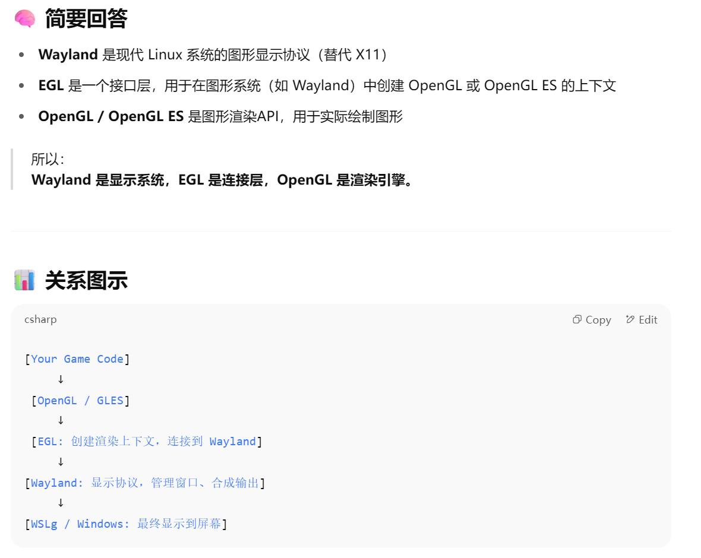
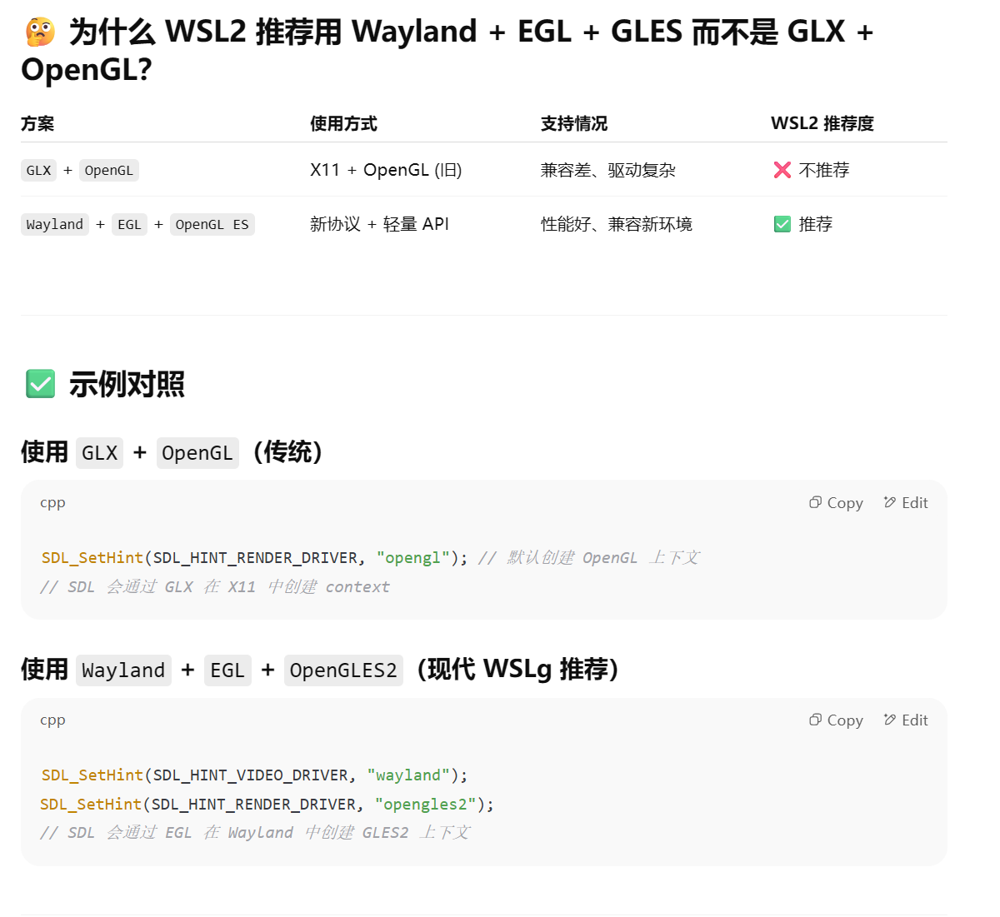
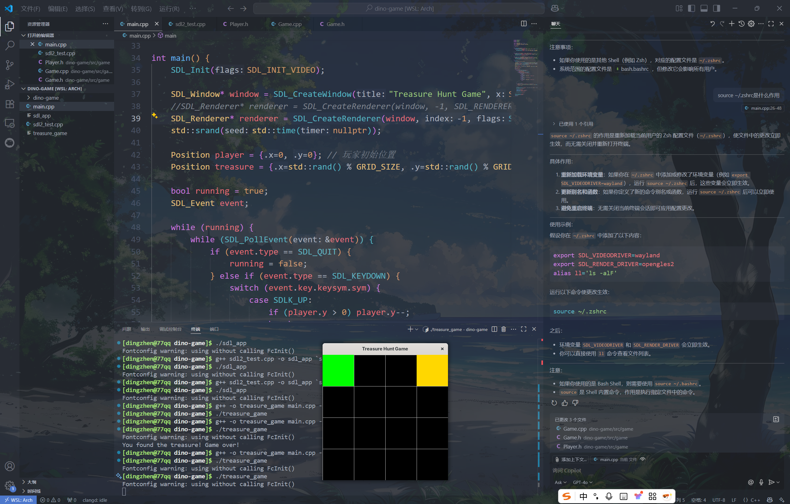

cpp game
用arch linux in wsl2开发一个cpp的游戏项目
get started
available options
在 Windows 上使用 WSL2 + Arch Linux 来开发一个 C++ 游戏项目时，要实现图形化界面支持，你可以结合以下技术来实现开发环境、图形显示和调试体验：
🎮 1. 图形界面支持方式
✅ 方案一：使用 Windows 上的图形服务（推荐）
使用 Windows 的 X Server + WSLg
WSL2 从 Windows 11 开始自带 WSLg（Windows Subsystem for Linux GUI） ，它支持在 Linux 子系统中直接运行 GUI 程序（包括基于 X11 和 Wayland 的程序）。
适合人群 ：使用 Windows 11 的开发者（最推荐）
优点 ：
零配置 GUI 支持
可以运行 Linux 下的 GUI 工具（如 VS Code、SDL/OpenGL 窗口）
兼容性 ：WSLg 兼容 SDL2、OpenGL、Vulkan 等图形库
🛠 使用方法 ：
确保你的 WSL2 版本为 Windows 11 的 WSLg 支持版本
在 Arch 中安装游戏相关库：
pacman -S sdl2 sdl2_image glew glfw mesa vulkan-icd-loader
✅ 方案二：使用 Windows 的 X Server（例如 VcXsrv、X410）
如果你使用 Windows 10 或禁用了 WSLg，可以使用 X Server：
安装 X Server（Windows） ：
VcXsrv
X410 启动 X Server 后，在 Arch 中设置环境变量：
export DISPLAY = $( cat /etc/resolv.conf | grep nameserver | awk '{print $2}' ) :0
export LIBGL_ALWAYS_INDIRECT = 1
🔧 2. 游戏开发相关工具链建议
类型
工具/库
安装命令
编译器
gcc / clangsudo pacman -S gcc clang
构建系统
cmake / mesonsudo pacman -S cmake meson ninja
图形库
SDL2, OpenGL, Vulkansudo pacman -S sdl2 glew glfw mesa vulkan-headers
编辑器
neovim / vscode / CLionVSCode可用Windows端，连接WSL调试
🕹 示例：编译一个简单的 SDL2 程序
安装 SDL2：
编写 main.cpp：
#include <SDL2/SDL.h>
int main () {
SDL_Init ( SDL_INIT_VIDEO );
SDL_Window * window = SDL_CreateWindow ( "Hello SDL2" , 100 , 100 , 800 , 600 , SDL_WINDOW_SHOWN );
SDL_Delay ( 3000 );
SDL_DestroyWindow ( window );
SDL_Quit ();
return 0 ;
}
编译并运行：
main.cpp -o sdl_app ` sdl2-config --cflags --libs`
如果你用的是 WSLg 或配置好了 X Server，窗口就能正常显示。
💡 如果你用 Vulkan 或 OpenGL：
WSLg 支持 OpenGL + Vulkan 显示加速
可结合 vulkan-tools 测试：
pacman -S vulkan-tools
| less
🚀 推荐开发流程（Windows + WSL2）：
用 VS Code 的 WSL Remote 插件 开发代码
在 Arch 下使用 cmake 构建
用 SDL/OpenGL 编写游戏逻辑
用 WSLg 或 X Server 显示图形界面
（可选）使用 git + GitHub/GitLab 做版本管理
my option: 方案一：使用 Windows 上的图形服务
1. 在 Arch 中安装游戏相关库：
pacman -S sdl2 sdl2_image glew glfw mesa vulkan-icd-loader
简单测试功能（after sudo pacman -S sdl2）：
编写：sdl2_test.cpp
#include <SDL2/SDL.h>
int main () {
SDL_Init ( SDL_INIT_VIDEO );
SDL_Window * window = SDL_CreateWindow ( "Hello SDL2" , 100 , 100 , 800 , 600 , SDL_WINDOW_SHOWN );
SDL_Delay ( 3000 );
SDL_DestroyWindow ( window );
SDL_Quit ();
return 0 ;
}
如果你想让窗口里看到一些图像内容（比如颜色或图形），需要使用 SDL_Renderer 来清屏和绘制。
例如用蓝色填充窗口：
// 这段代码会显示一个纯蓝色窗口，持续 3 秒钟。
#include <SDL2/SDL.h>
int main () {
SDL_Init ( SDL_INIT_VIDEO );
SDL_Window * window = SDL_CreateWindow ( "Hello SDL2" , 100 , 100 , 800 , 600 , SDL_WINDOW_SHOWN );
SDL_Renderer * renderer = SDL_CreateRenderer ( window , -1 , SDL_RENDERER_ACCELERATED );
// 设置颜色为蓝色（R, G, B, A）
SDL_SetRenderDrawColor ( renderer , 0 , 0 , 255 , 255 );
SDL_RenderClear ( renderer ); // 用当前颜色清空窗口
SDL_RenderPresent ( renderer ); // 显示内容
SDL_Delay ( 3000 ); // 显示 3 秒
SDL_DestroyRenderer ( renderer );
SDL_DestroyWindow ( window );
SDL_Quit ();
return 0 ;
}
2. 设置 SDL 强制使用 Wayland + EGL 渲染
在初次运行以上绘制窗口（蓝色）的时候，尽管编译成功，但会在运行时候出现error：SDL 在尝试使用 OpenGL 上下文时失败了
Failure
这个错误通常意味着 SDL 在尝试使用 OpenGL 上下文时失败了 ，而原因大多数和 图形环境配置不兼容 或 驱动/库缺失 有关。
你在 WSL2 中运行 SDL2/OpenGL 相关程序
SDL 在创建 SDL_Renderer 时，内部会请求一个 OpenGL 上下文（可能是通过 GLX）
WSL 的图形系统（尤其是非 WSLg，比如使用 VcXsrv 或 X410）不能正确处理这个 OpenGL 请求
解决方案：
方案一(未采用):显式使用软件渲染
✅ 最小可运行版本（使用软件渲染） ：如果你只是想确认 SDL 窗口能正常显示颜色，用这个代码即可：
#include <SDL2/SDL.h>
int main () {
SDL_Init ( SDL_INIT_VIDEO );
SDL_Window * window = SDL_CreateWindow ( "Hello SDL2" , 100 , 100 , 800 , 600 , SDL_WINDOW_SHOWN );
SDL_Renderer * renderer = SDL_CreateRenderer ( window , -1 , SDL_RENDERER_SOFTWARE );
SDL_SetRenderDrawColor ( renderer , 0 , 0 , 255 , 255 ); // 蓝色
SDL_RenderClear ( renderer );
SDL_RenderPresent ( renderer );
SDL_Delay ( 3000 );
SDL_DestroyRenderer ( renderer );
SDL_DestroyWindow ( window );
SDL_Quit ();
return 0 ;
}
方案二（采用）:设置 SDL 强制使用 Wayland + EGL 渲染
如果你使用的是 Windows 11 + WSLg，建议你检查环境变量是否存在：
遇到的问题：
显示正常 但是SDL 在尝试使用 OpenGL 上下文时失败了
$WAYLAND_DISPLAY = wayland-0 说明你使用的是 WSLg ，也就是 Windows 11 自带的图形支持环境 ，它理论上支持 OpenGL 和 Vulkan。但是你仍然遇到 SDL + OpenGL 的 GLX 错误，这提示我们：
SDL 可能误以为你在用 X11 ，从而尝试用 GLX （OpenGL on X11）创建上下文，而不是用 Wayland 或 EGL。
✅ 最关键的问题：SDL 自动选择的图形后端有问题
即便你在 WSLg 下，SDL2 默认可能仍然走 X11 + GLX 路径，而不是 Wayland + EGL。
快速验证方案：检查 SDL 的 video driver
在终端运行：
SDL_VIDEODRIVER = wayland ./sdl_app
或者切换回 X11：
SDL_VIDEODRIVER = x11 ./sdl_app
最直接的方法是：✔ 设置 SDL 强制使用 Wayland + EGL 渲染：
WSLg 支持 Wayland + EGL 更加稳定。你可以尝试运行前设置以下环境变量：
export SDL_VIDEODRIVER = wayland
export SDL_RENDER_DRIVER = opengles2
或者在程序中设置（必须在 SDL_Init 之前）：
SDL_SetHint ( SDL_HINT_VIDEO_DRIVER , "wayland" );
SDL_SetHint ( SDL_HINT_RENDER_DRIVER , "opengles2" );
这些设置会强制 SDL：
使用 Wayland 而不是 X11
使用 EGL/OpenGL ES 2 而不是 GLX/OpenGL
📦 安装必要依赖库（Wayland & EGL 支持）
确保你已经安装了支持 EGL 和 Wayland 的 Mesa 和 SDL 库：
pacman -S mesa libglvnd wayland libegl sdl2 sdl2_image
✅ 总结你的修复步骤建议：
确保 WSLg 在运行（你已经成功）
设置 SDL 使用 Wayland + GLES：
export SDL_VIDEODRIVER = wayland
export SDL_RENDER_DRIVER = opengles2
确保安装了所有依赖库：
pacman -S mesa libegl libglvnd wayland
使用 SDL_RENDERER_SOFTWARE 是兜底方案
Question
以上你给出的措施中 ： 显式使用软件渲染（避免 OpenGL） 解决了问题，这个做法和后面你提出的设置 SDL 强制使用 Wayland + EGL 渲染有什么关联？

Wayland + EGL和OpenGL是什么关系?


最终我们采用方案二：设置 SDL 强制使用 Wayland + EGL 渲染
走迷宫游戏（用于测试功能栈完整性）
以下是一个简单的实现，满足你的需求：一个 4x4 的方格游戏，玩家通过键盘上下左右键移动到随机生成的宝藏位置即可结束游戏。
#include <SDL2/SDL.h>
#include <cstdlib>
#include <ctime>
#include <iostream>
const int GRID_SIZE = 4 ; // 4x4 方格
const int CELL_SIZE = 100 ; // 每个方格的大小
const int WINDOW_SIZE = GRID_SIZE * CELL_SIZE ;
struct Position {
int x , y ;
};
void renderGrid ( SDL_Renderer * renderer ) {
SDL_SetRenderDrawColor ( renderer , 200 , 200 , 200 , 255 ); // 灰色
for ( int i = 0 ; i <= GRID_SIZE ; ++ i ) {
SDL_RenderDrawLine ( renderer , i * CELL_SIZE , 0 , i * CELL_SIZE , WINDOW_SIZE ); // 竖线
SDL_RenderDrawLine ( renderer , 0 , i * CELL_SIZE , WINDOW_SIZE , i * CELL_SIZE ); // 横线
}
}
void renderPlayer ( SDL_Renderer * renderer , Position player ) {
SDL_Rect rect = { player . x * CELL_SIZE , player . y * CELL_SIZE , CELL_SIZE , CELL_SIZE };
SDL_SetRenderDrawColor ( renderer , 0 , 255 , 0 , 255 ); // 绿色
SDL_RenderFillRect ( renderer , & rect );
}
void renderTreasure ( SDL_Renderer * renderer , Position treasure ) {
SDL_Rect rect = { treasure . x * CELL_SIZE , treasure . y * CELL_SIZE , CELL_SIZE , CELL_SIZE };
SDL_SetRenderDrawColor ( renderer , 255 , 215 , 0 , 255 ); // 金色
SDL_RenderFillRect ( renderer , & rect );
}
int main () {
SDL_Init ( SDL_INIT_VIDEO );
SDL_Window * window = SDL_CreateWindow ( "Treasure Hunt Game" , SDL_WINDOWPOS_CENTERED , SDL_WINDOWPOS_CENTERED , WINDOW_SIZE , WINDOW_SIZE , SDL_WINDOW_SHOWN );
SDL_Renderer * renderer = SDL_CreateRenderer ( window , -1 , SDL_RENDERER_ACCELERATED );
std :: srand ( std :: time ( nullptr ));
Position player = { 0 , 0 }; // 玩家初始位置
Position treasure = { std :: rand () % GRID_SIZE , std :: rand () % GRID_SIZE }; // 随机生成宝藏位置
bool running = true ;
SDL_Event event ;
while ( running ) {
while ( SDL_PollEvent ( & event )) {
if ( event . type == SDL_QUIT ) {
running = false ;
} else if ( event . type == SDL_KEYDOWN ) {
switch ( event . key . keysym . sym ) {
case SDLK_UP :
if ( player . y > 0 ) player . y -- ;
break ;
case SDLK_DOWN :
if ( player . y < GRID_SIZE - 1 ) player . y ++ ;
break ;
case SDLK_LEFT :
if ( player . x > 0 ) player . x -- ;
break ;
case SDLK_RIGHT :
if ( player . x < GRID_SIZE - 1 ) player . x ++ ;
break ;
}
}
}
// 检查是否找到宝藏
if ( player . x == treasure . x && player . y == treasure . y ) {
std :: cout << "You found the treasure! Game over!" << std :: endl ;
running = false ;
}
// 渲染
SDL_SetRenderDrawColor ( renderer , 0 , 0 , 0 , 255 ); // 黑色背景
SDL_RenderClear ( renderer );
renderGrid ( renderer );
renderTreasure ( renderer , treasure );
renderPlayer ( renderer , player );
SDL_RenderPresent ( renderer );
}
SDL_DestroyRenderer ( renderer );
SDL_DestroyWindow ( window );
SDL_Quit ();
return 0 ;
}
运行程序前设置 SDL 使用 Wayland 和 EGL：
export SDL_VIDEODRIVER = wayland
export SDL_RENDER_DRIVER = opengles2
(经测试这一步没有必要 都能跑) 修改代码以使用 GLES
SDL2 会自动选择 EGL 和 GLES2 渲染器，但你可以显式指定 GLES 渲染器。修改SDL_CreateRenderer 的标志：
SDL_Renderer * renderer = SDL_CreateRenderer ( window , -1 , SDL_RENDERER_ACCELERATED | SDL_RENDERER_PRESENTVSYNC );
编译运行
为了永久性配置，加到你的 shell 配置文件中
游戏效果：
